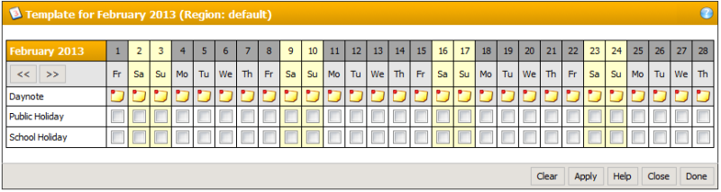

Month Template


| Navigation: Dialogs | |
Month Template |
|

The month template dialog displays a specific month of a specific region providing the option to store day notes and mark holidays. The month, year and region can be seen in the header. All users will these notes and holidays. You need to press [Apply] to make your changes permanent. After you're done click [Close]. The dialog will close and the main page will automatically be reloaded and reflect your changes of the month template.
In the day note row you will see a notebook icon for each day. This feature maybe disabled for regular users by the administrator. Clicking this icon will open the day note dialog. You can store a note of 80 characters for each day. A day holding a day note will be displayed with a special marker in the regular calendar display. There the day note will pop up like a tool tip when moving the mouse over the marked cell.
Daynote Icons
The subsequent rows in the month template dialog represent the configured holiday types and hold check boxes for each day of the month. If you want to set a holiday type for a specific day just check the box in the corresponding field. You can check several boxes before applying your changes. The appropriate days will then be colored according to your new settings.
•[Clear]
Clears all check marks.
•[Apply]
Writes the information in the dialog to the database.
•[Help]
Open this section of this manual.
•[Done]
Closes the dialog and refreshes the page that launched the dialog.